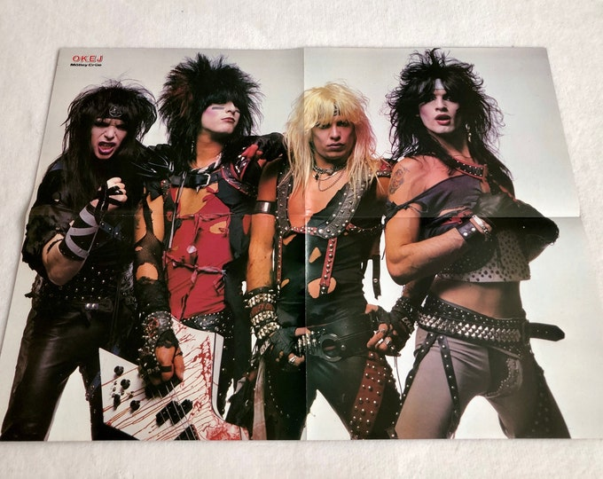

metal-core
MELHORES ALBUNS DE ROCK E HEAVY METAL
#MÖTLEY CRUE
Seria engraçado se não fosse cômico. A banda mais conhecida por suas loucuras no mundo do rock´n´roll tem como um de seus melhores álbuns na época em que estava sóbria. Irônico também é o fato de o nome do álbum ser inspirado em traficantes de drogas, quando Vince Neil, Nikki Sixx, Tommy Lee e Mick Mars tinham recém-saído da reabilitação. Mas, se for pensar bem, esse tipo de coisa é bem a cara do Mötley Crüe.
